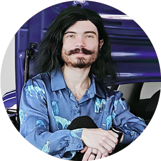
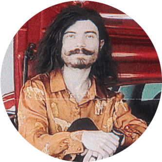

Welcome to Alex's Professional Profile:

Overview:
As a Sr. dev, I hold experience in back-end web tech and other creative fields.
My background is diverse, extending into the realms of 3D design and game development.
These skills being atop my foundation in UX design and accessibility – which I am currently furthering through graduate studies.
I have a passion for engaging in Employee Resource Groups (ERGs) and have assisted in founding a new ERG in Accessibility, as well as being the lead of an LGBTQ+ ERG.
I’m always eager to dive into challenging new projects.
Languages:
-
C++
-
HTML
-
CSS
-
Javascript
-
PostgreSQL
-
R
Interests:
UX is a major component in what I do. Whether it be designing UI's for web interfaces or games, creating product prototypes, or making other everyday tools more acessible for a wider audience.
I find something to look forward to improving for any project I am put on.
My preference is fast-paced enviroments with lots of variations in things to work on!
Testimonials:
"An absolute freakin computer Wizard!"
- Joy
[Client]
"Pro PC bro."
- Ted
[My bro]
"Excellent team player, very motivated. Crazier than I am."
- John
[Manager]
"Really creative and always thinking outside of the box!"
- Scott
[Client]
Welcome to Alex's Dating Profile:

Overview:
Hey! I'm Alex. 330 months old and a fun spirit! I'm looking for my life partner.
Languages:
-
Russian
-
French
-
English
-
Japanese
-
German
-
ASL
Interests:
I love games, whether it be tabletop of video games!
I enjoy learning new skills and enjoy creative hobbies (art, music, game dev, building, cratfs, etc). I hope my future partner likes to push themselves as much as I do, and we can encourage each other!
On top of being a software analyst, I'm also a digital artist and game developer. You can check out some of my artwork on the website @ art.dev
I love creating renders in a vaporwave style!
I'm a huge animal lover, but I prefer the unusual or exotic.
Above all, I love birds. I have a 64yr old house and I am working on renovating it, so doing a lot of DIY work.
I'm very creative when it comes to finding solutions to some of the problems I face in life!
Testimonials:
"I think if you just did neck down no one could tell you’re a man. You’d have straight men turned on"
- Ivy
"Loyal. Kind. Analytical.
Means well, but often a pain in the ass. Likes animals, but prefers birds."
- Josh
"Your knack for achieving the unexpected and always striving for excellence keeps me challenged to up my game. You have a friendly energy coupled with a go-get-em attitude that makes it very easy to get along with you. Also, fuck Josh."
- Rom
"I want to thank you for been a friend. Honestly you are a good person and i do apreciate you. Is rear to find people like you . I would like to do more for you like help you at your home etc."
- Franklin
"You really are the best friend anyone could have. I wish I could help you more."
- Justin
[RIP 2023]
"Thanks for being a kind friend."
- Ethan
[RIP 2023]
"Конечно, ты мой любимый внук."
- Nina, Grandmother
[RIP 2020]
"You are the nicest person."
- Jack